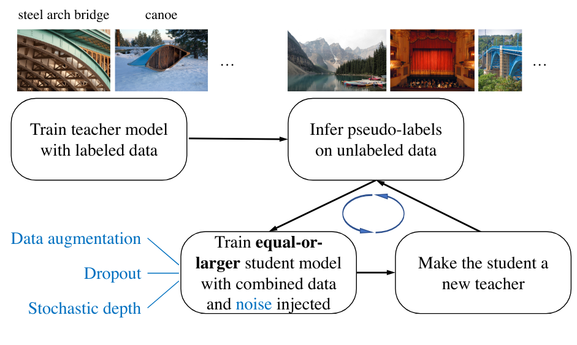

Distillation des connaissances#
Le concept de distillation des connaissances a été introduit dans le papier Distilling the Knowledge in a Neural Network en 2015. L’idée de la distillation est d’utiliser un modèle appelé teacher (un modèle profond et déjà entrainé) pour transférer les connaissances apprises dans un modèle plus petit appelé student.
Pourquoi est-ce que ça fonctionne ?#
On peut se demander pourquoi est ce que cela fonctionne mieux que d’entraîner directement le student avec le loss classique prédiction/label.
Il y a plusieurs raisons à cela :
Transfert des connaissances implicites : La fait d’utiliser les prédictions du teacher permet au modèle student d’apprendre des connaissances implicites sur les données. La prédiction du modèle est une distribution de probabilités qui va indiquer la similarité entre plusieurs classes par exemple.
Conservation des relations complexes : Le modèle teacher est très complexe et peut capturer des structures complexes dans les données ce qui n’est pas forcément le cas pour un modèle plus petit entraîné à partir de zéro. La distillation permet au student d’apprendre ces relations complexes plus simplement tout en améliorant la vitesse et en réduisant l’utilisation mémoire (car c’est un modèle plus petit).
Stabilisation de l’entraînement : En pratique, on constate également que l’entraînement est plus stable pour le student si on utilise cette méthode de distillation.
Atténuation des problèmes d’annotations : Le modèle teacher a appris à généraliser et est donc capable de prédire correctement mais si il a été entrainé sur ces mêmes images avec des labels incorrectes. Dans le cadre de la distillation, la différence importante entre la sortie du teacher et le label donne une information supplémentaire au student sur la qualité de cette donnée.
Utilisation pratique#
En pratique, il est possible de transférer la connaissance d’un modèle performant dans un modèle plus petit avec peu ou pas de perte de qualité de prédictions. C’est très pratique lorsqu’on cherche à réduire la taille de nos modèles pour, par exemple, faire de l’embarqué ou du traitement sur CPU. Il est aussi possible de distiller plusieurs teachers dans un unique student. En faisant cela, il peut arriver que le student soit plus performant que chaque teacher pris individuellement.
C’est une technique à connaître et qui peut vous être utile dans beaucoup de situations.
Autres applications de la distillation des connaissances#
Depuis son invention, la distillation des connaissances a été adapté à la résolution de toute sorte de problèmes. Nous allons en présenter deux ici : l’amélioration de la classification avec NoisyStudent et la détection d’anomalies non supervisée avec STPM.
Noisy Student#
Pendant longtemps, la course à la performance sur le dataset ImageNet a été au coeur de la recherche en deep learning. Le but étant d’améliorer encore et encore les performances sur ce fameux dataset. En 2020, l’article Self-training with Noisy Student improves ImageNet classification propose une utilisation de la distillation pour entraîné un modèle student plus performant que le teacher à chaque itération.
Un modèle student est entraîné à partir de pseudo-labels extrait d’un modèle teacher (labels crées par le modèle teacher sur des images non annotées). Lors de l’entraînement, du bruit est ajouté pour augmenter sa robustesse. Une fois que le student est entraîné, on l’utilise pour obtenir de nouveaux pseudo labels et entraîner un autre student. On répéte le processus un certain nombre de fois et on finit par obtenir un modèle bien plus performant que le teacher de base.

STPM#
Un exemple très intéressant de l’utilisation de la distillation des connaissances est son utilisation pour la détection d’anomalies non supervisée. L’article Student-Teacher Feature Pyramid Matching for Anomaly Detection adapte la distillation des connaissances pour ce cas d’usage.
Cette fois-ci, le modèle teacher et le modèle student ont la même architecture. Au lieu de regarder les prédictions et d’entraîner le modèle sur cela, on va plutôt s’intéresser aux feature map des couches du milieu du réseau. Dans l’idée, lors de l’entraînement, on dispose de données sans anomalies. Le modèle teacher est pré-entrainé sur ImageNet (par exemple) et est frozen pendant l’entraînement. Le modèle student est initialisé aléatoirement et c’est lui qu’on entraîne. Plus précisement, on l’entraine à reproduire les feature map du teacher sur des données sans défauts. A la fin de l’entrainement, le student et le teacher vont avoir des feature map identiques sur un élément sans défaut.
Lorsqu’il est temps de tester notre modèle, on teste sur des données sans défaut et des données avec défauts. Sur les données sans défaut, le modèle student va imiter le teacher parfaitement tandis que sur des données defectueuses, les feature map du student et du teacher seront différentes ce qui nous permettra de calculer un score de similarité (qui nous servira de score d’anomalie).

En pratique, cette méthode fait partie des méthodes les plus performantes pour la détection d’anomalies non supervisée. C’est cette méthode que nous allons implémenter dans le notebook suivant.
Comment ça fonctionne ?#
En pratique, notre modèle student va être entrainé sur deux objectifs :
Il va minimiser la distance entre sa prédiction et la prédiction du teacher sur le même élément.
Il va également minimiser la distance entre sa prédiction et le label de l’entrée.
Ces deux loss sont combinés avec un facteur de pondération \(\alpha\) que l’on peut choisir. De cette manière, le modèle student dispose d’une part du label de l’image et d’autre part de la prédiction du modèle teacher (qui est une distribution de probabilité).
Note : En pratique, pour la première partie du loss, on ne compare pas les probabilités après la fonction softmax mais plutôt les logits avant l’application du softmax. Pour plus de clarté, on continuera à dire “prédictions” au lieu de “logits”.